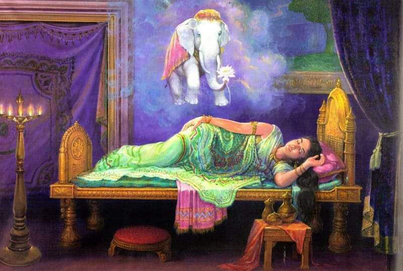

Namo tassa bhagavato arahato sammāsambuddhassa
Homage to the Most Venerable One, the Arhat, the Self-Awakened One
Namo tassa bhagavato arahato sammāsambuddhassa
Homage to the Most Venerable One, the Arhat, the Self-Awakened One
Namo tassa bhagavato arahato sammāsambuddhassa
Homage to the Most Venerable One, the Arhat, the Self-Awakened One
Sabbapāpassa akaraṇaṃ,
Do no evil
Kusalassa upasampadā ;
Accumulate good things
Sacitta pariyo dapanaṃ,
Encourage your mind to comprehend
Etaṃ buddhāna sāsanaṃ
This is Buddha's teaching.
The picture depicts a dream that Mahamaya has, foreshadowing that she will give birth to a great man.
Since Sumedha made the decision to become a Bodhisattva, four Asankhyas and one hundred thousand cycles of the arising and disappearance of the universe have passed.
During this time the Bodhisatta strove to attain perfection ( pāramī ), charity ( cāga ), and faultless conduct ( cariyā ) through the means of development ( bhāvanā ). And he attained the summit of these attainments and all the other necessary conditions that contribute to becoming a Sammasambuddha. In his penultimate birth he was reborn as Prince Vessantara, and in this birth he perfected the practice of generosity.
Thus he completed the entire period of accumulation of perfections, which caused awe and reverence even in the inanimate great earth ( mahā-pathavī ), which shook and trembled seven times. And having completed his term of life in the human abode, the Bodhisatta was reborn as a deva named Setaketu in the Tusita world. There he was endowed with ten qualities in which he excelled other devas:
Setaketu enjoyed supreme divine bliss in the Tusita abode for 4,000 years, according to the calculation of this world, which is equivalent to 576 million years in the human world. Then, 1,000 years before the end of his life according to human calculation in Tusita, Brahma Suddhavasa declared: “Friends, in 1,000 years from today, the omniscient Buddha will appear in the human abode!”
And this proclamation thundered from the world of the devas as a sound ( Buddha-kolāhala ), meaning that “The omniscient Buddha will appear!” and this was reflected throughout the human world 1000 years before this event.
Hearing this sound announcing the imminent advent of the Buddha, all the kings of the devas belonging to the 10,000 world system, such as Catumaharaja, Sakka, Suyama, Santusita, Sunimmita, Vasavatti and all the Maha Brahmas, gathered at a certain place to hold a discussion about the Bodhisatta, whose celestial life span, compared to the human one, would last only seven days, and whose approaching end of life began to manifest through the five signs ( pubba-nimitta ) common to all devas whose life span in the Tusita world is ending:
(1) His garlands wither ( mālā milāyanti );
(2) His clothes become dirty ( vatthāni kilissanti );
(3) His armpits are perspiring ( kacchehi seda mukkhanti );
(4) His body emits a foul odor ( kaye dubbaṇṇiyaṃ okkamati ); (5) The Devas no longer enjoy their heavenly throne.
Then they all approached Setaketu with folded hands in respect and requested him as follows: “Setaketu, you have fully developed the ten perfections, not with the desire to attain the bliss of Sakka, Mara, Brahma, or the Universal Monarch. You have achieved these perfections by aiming only at the omniscient state of a Buddha, in order to gain freedom from the three worlds, and also to liberate the multitudes of humans, devas, and brahmas. Bodhisatta, now is the most auspicious time for you to become an omniscient Buddha! This is indeed the right moment. Therefore, may you take birth in the human world. Having attained Supreme Awakening, may you liberate humans, devas, and brahmas from samsara by teaching the Dhamma leading to deathless Nibbana.”
Setaketu did not hastily give his consent to the request of the devas and brahmas gathered together from the 10,000 world system. In accordance with the tradition of previous Bodhisattvas, he conducted the following five great investigations:
Of these five great investigations, the Bodhisatta first pondered:
“Is it a good time or not for the Buddha to appear in the human world?”
And he saw that it was not the right time for the Buddha to come, when the lifespan of people was increasing from 100,000 years. Because of such longevity, the suffering caused by birth, the suffering caused by illness, the suffering caused by old age, and the suffering caused by death were not apparent. Hidden by their longevity, people tended to ignore all the suffering that was usually apparent.
The Dhamma discourses delivered by the Buddhas invariably center around the characteristics of impermanence ( anicca ), suffering ( dukkha ), and impersonality ( anatta ). If a Buddha were to appear when the lifespan exceeds 100,000 years and deliver discourses on the nature of impermanence, suffering, and impersonality, the people of that period would be perplexed, wondering what the Buddhas were teaching. They would neither listen nor believe the discourses. Without listening or believing, people would certainly wonder what the Buddha’s teaching was all about. They would never realize the Four Noble Truths and would never attain Nibbana. It would be useless to teach non-believers discourses on the path that would liberate them from samsara. Therefore, the period when the lifespan exceeds 100,000 years is not the right time for the Buddhas.
The period when the lifespan of people falls below 100 years is also not suitable for the appearance of a Buddha, because beings belonging to such a period are greatly abounded in defilements. Dhamma sermons delivered to such people will not last long. In fact, they will instantly disappear, just as a scribble drawn with a stick on the surface of water disappears, leaving no trace. Therefore, the short period of lifespan falling below 100 years is also not a suitable time for the appearance of Buddhas.
Only the periods when the lifespan fluctuates between 100,000 and 100 years are suitable for the appearance of a Buddha. These are the periods in which birth, old age, and death are clearly manifest, when the teaching of the three characteristics and the teaching of how beings can be liberated from samsara are easily understood, and when beings are not so overwhelmed by the defilements of sensual pleasures. Therefore, this is the appropriate period for the most auspicious appearance of a Buddha. Thus, Bodhisatta Setaketu clearly saw the appropriate time and decided, “This is the most auspicious time for me to become a Buddha.”
He then explored the continent where the Buddhas had appeared. There are four large island-continents, each surrounded by 500 smaller islands. One of these is called Jambudipa, because it is distinguished by the pink apple tree ( jambu ) growing on it, and the Bodhisatta clearly discerned it as the only island-continent on which previous Buddhas had appeared.
Then he continued his investigation thus: "This Jambudipa is extremely vast. Where in this vast expanse of land did the former Buddhas appear?" He then saw that it was the Middle Land ( Majjhima-desa ) in Jambudipa that was the place where the ancient Buddhas appeared. In the Middle Land was the city of Kapilavatthu, the capital of the Sakyan clan. Bodhisatta Setaketu decided that he should be reborn in this city.
Upon examining the family into which the Bodhisatta was to be reborn in his last existence, he clearly understood: “Former Bodhisattas in their last existences belonged neither to the merchant class nor to the poor class. They were born only into a noble family or a Brahmin family, depending on what the people of that period considered highest. At a time when people pay the highest honors to the ruling families, a Bodhisatta is born into their class. At a time when people do so to the Brahmins, he is born into one of their families. At present, people revere the ruling families, and I should be reborn into one of them. Among them, the ruler Suddhodana of Kapilavatthu is a direct descendant of Maha Sammatta, the first elected ruler, in the unbroken noble line of the pure Sakya clan. This Suddhodana, of pure noble descent, will be my father.”
Finally, he examined who would be his mother. He clearly understood, “The Buddha’s mother is a model of modesty and chastity; she never drinks alcoholic drinks or takes intoxicants; she has accumulated merit and perfected herself for 100,000 kalpas to become the mother of the Bodhisatta in her last birth. From the time she was born as the future mother of the Bodhisatta, she has constantly observed and upheld the five precepts without any transgression. Siri Maha Maya Devi, the chief consort of the ruler Suddhodana, is fully endowed with all these qualities. Thus, Siri Maha Maya Devi will be my mother.” Then, examining the remaining life span of Maha Maya, he clearly understood that she had only ten months and seven days to live.
Thus, having completed the five great investigations, Bodhisatta Setaketu decided, “I will descend to the human realm and become a Buddha.” Having made this decision, the Bodhisatta gave his consent to the devas and brahmas of the 10,000 world system: “Devas and brahmas, now is the time for me to become a Buddha as you have requested. Now you may leave whenever you wish, I will soon descend to the human realm to attain Buddhahood.”
Having made his vow and bid farewell to all the devas and brahmas, Bodhisatta Setaketu entered Nandanavan, the heavenly garden, accompanied by the devas of the world.
Tusita.
Nandana - This grove is the place of solace for those devas who are approaching the end of their lives and experience the five omens of impending death, which warn them of their impending fate and which inevitably appear. Many a deva breaks down, weeping and lamenting the imminent loss of their blissful life; but as soon as they enter this enchanting garden, they instantly feel themselves transformed again into devas of serenity, peace and happiness. Whatever the cause of their despair and sorrow, as soon as these devas enter the Nandana grove, they are immersed in pleasure. As the morning dew and mist evaporate at the touch of the radiance of the rising sun, as the flame of an oil lamp flickers and is extinguished by a strong gust of wind, so the cares of the dying devas are put to rest. Thus the saying arose: “One who has not visited the Nandana Grove, where all the best sense pleasures of the world converge, cannot understand worldly happiness.” Such is the attraction of the Nandana Grove for all worldly beings.
When Setaketu entered the Nandana Grove, the retinue of male and female devas accompanying him addressed him: “After your passing away from this abode of devas, may you go to a good abode, the destination of beings who have performed meritorious deeds!”
The devas accompanying Bodhisatta Setaketu also urged him to remember again and again the merits he had performed in the past, and moved around the Nandana Grove, surrounding the Bodhisatta. While the Bodhisatta was wandering around the Nandana Grove in the company of the devas, urging him to reflect on his previous meritorious life, the time of his passing arrived.
At the time of Setaketu's passing away in the Tusita world, Siri Maha Maya, the wife of King Suddhodana, was enjoying the magnificent pleasures of a king. She had now reached the third part of the second stage of life, called middle age ( majjhima-vayā ). The human lifespan was then 100 years. Thus the age of Siri Maha Maya Devi was about 55 years and four months. This is described in detail in the commentary called Samanta-cakkhu-dīpanī .
Uttarasaha Constellation Festival
It was the ninth day of July ( Āsāḷha ) in the year 564 BCE, when Siri Maha Maya was 55 years and four months old. The people of the kingdom were joyfully celebrating the festival of the constellation Uttarasaha, a traditional annual event. Everyone participated in the celebration, trying to outdo each other in joy.
Maha Maya Devi also took part in the festival, which was celebrated from the ninth to the fourteenth day of the waxing moon. The festival was characterized by complete abstinence from alcoholic drinks and ornaments. On the day of the full moon, the chief Maha Maya woke up early, took a fragrant bath and made a generous donation of money and various articles amounting to 400,000 coins. Then after breakfast, she took the eight vows from her hermit teacher Kanadevila, went to the exquisitely decorated royal chambers and spent the entire day observing the eight vows.
While observing the eight vows and lying on a magnificent bed during the last watch of the full moon night, Siri Maha Maya Devi fell asleep and had a dream that foretold the conception of the Bodhisatta: The Four Great Kings lifted her bed and carried it to Lake Anotatta in the Himalayas. Then they placed it on a flat surface of a multi-colored slab under the shade of a Sala tree.
After this, the consorts of the four great kings arrived at the place. They escorted Maha Maya to the Anotatta Lake, bathed her, and helped her dress in celestial robes. They also adorned her with celestial flowers. Then they laid her down with her head to the east, in the inner chamber of the golden mansion inside the silver mountain, which was near the lake. At that moment, in a dream, she saw a pure white elephant grazing around the golden mountain, which was near the silver mountain. Then the white elephant came down from the foot of the golden mountain, climbed the silver mountain, and entered the golden mansion. Then the white elephant walked clockwise around the queen and entered her womb from the right side.
At the time the queen had this dream, Bodhisatta Setaketu was walking around the Nandana grove in the Tusita world, enjoying the delightful sights and sounds; while doing so, he left the abode of the devas in full awareness.
At that very moment the Bodhisatta was conceived in his mother's womb with the first great resultant consciousness ( mahā-vipāka-citta ), the three-rooted rebirth consciousness ( tihetuka-paṭisandhi-citta ), the result of the first great wholesome consciousness ( mahā-kusala-citta ), accompanied by joy ( somanassa-sahagata ), associated with knowledge ( ñāṇa-sampayutta ), arising spontaneously without prompting ( asaṅkhārika ) and brought about by the preparatory development ( parikamma-bhāvanā ) before attaining absorption ( mettā-jhāna ). This event occurred on the morning of a Thursday, the July full moon ( Āsāḷha ), in the year 624 BCE. The exact moment of his conception was marked by the conjunction of the Moon with the constellation Uttarasahi.
At the same time as the Bodhisatta was conceived, there was a great earthquake. The 10,000 world systems shook and trembled in the following six ways: The surface of the earth rose in the east and sank in the west; it rose in the west and sank in the east; it rose in the north and sank in the south; it rose in the south and sank in the north; it rose in the center and sank in the circumference; it rose in the circumference and sank in the center.
When Maha Maya awoke, she related her dream to King Suddhodana. The next morning, Suddhodana summoned 64 leading Brahmin teachers and offered them prepared seats suitable for nobles. After serving them food, drinks, etc. and honoring them in various ways, King Suddhodana related Maya's dream to the Brahmins and asked them, "What does this dream mean, is it good fortune or misfortune? Give me your interpretations."
The Brahmins replied to Suddhodana with their interpretations: “Great King, give up all your worries. The Queen has already become pregnant. The child in the womb is a boy, not a girl – you will have a son. If he decides to lead a royal life, he will certainly become a Universal Monarch, ruling over the four continents. If he renounces family, worldly life as a hermit, he will certainly become an omniscient Buddha who destroys and eliminates the roots of obscurations in the three worlds.”
From the time the Bodhisatta was conceived, the Four Great Kings, namely Vessavana and others, who lived in this universe, entered the magnificent chamber of Siri Maha Maya and constantly, day and night, protected it, each of them holding a sword to drive away the pettas and yakkhas, and the unsightly beasts and birds that the Bodhisatta and his mother could see or hear. In this way, the 40,000 Great Kings, residing in the 10,000 world system (there were four such deities in each system), guarded the entire space from the door of the magnificent chamber of the queen to the boundaries of the world element, driving away the pettas, yakkhas, etc.
This protection was only meant to ward off evil sights and sounds that might cause anxiety and fear to Maha Maya. Another reason could be that the Great Kings protected the Bodhisatta through pure veneration and devotion, inspired by the glorious power of the Bodhisatta.
The Bodhisatta's mother in his last existence usually strictly observes the moral rules. Before the Buddha's appearance, people accepted the instructions of wandering ascetics by bowing and paying respects while sitting before them, and Maha Maya also received instructions from the hermit Kanadevila before the Bodhisatta's conception. But once the Bodhisatta was conceived in her womb, it was no longer fitting for her to sit at the feet of any other teacher. Therefore, from the moment of the Bodhisatta's conception, she observed the moral rules without the instructions of any teacher.
The Bodhisatta's mother in his last existence, from the moment of her pregnancy, becomes completely free from all sensual desires for any man, even for the Bodhisatta's father. She tends to remain chaste and pure. On the contrary, it cannot be said that sensual thoughts do not arise in the laity at the sight of her person. Due to her long practice of perfections and the performance of good deeds, the Bodhisatta's mother in his last existence is endowed with splendor and superb beauty, which could not be accurately depicted in any painting or sculpture created by outstanding master artists and sculptors.
If, upon seeing such a Bodhisattva's mother, the observers are not satisfied with her mere appearance and try to approach her with passionate thoughts, their feet will freeze in place as if they were bound with iron chains. Therefore, it should be remembered that the Bodhisattva's mother in his last existence is a noble, unique woman, untouchable by any man or deva.